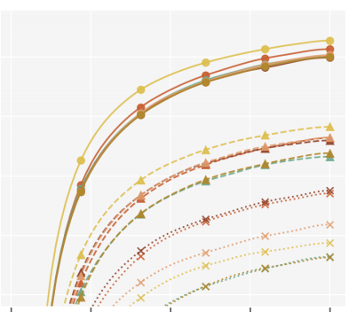
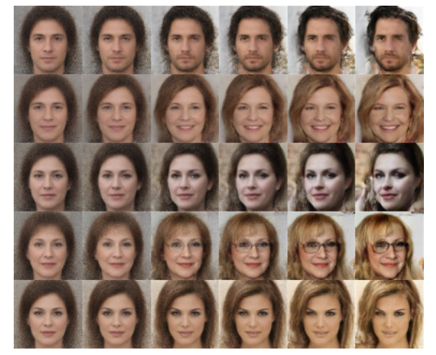
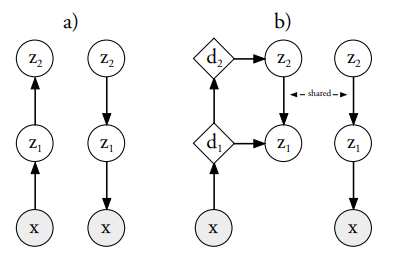
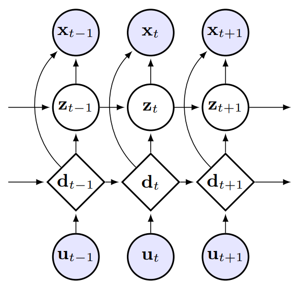
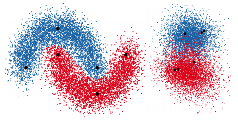
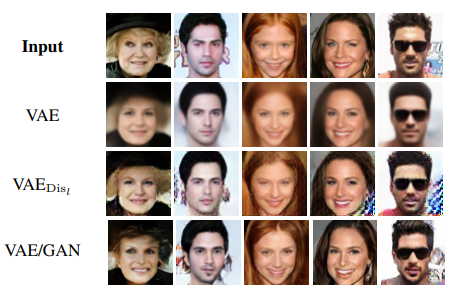

Ole Winther
Professor in Data science and complexity at Section for Cognitive Systems, DTU Compute,
Technical University of Denmark (DTU) and professor (MSO, with special responsibilities) in Genomic bioinformatics at Department of Biology, Bioinformatics, University of Copenhagen and Genomic medicine, Copenhagen University Hospital.
Current and former interests:
- Deep Generative Models
- Variational Inference
- Structured Mean-field Approximations
- Gene Regulation and Sequence Bioinformatics
- Health informatics and NLP for large-scale search
- Matrix Factorization for Collaborative Filtering
- Gaussian Processes
- Expectation Propagation
I'm CTO and co-founder of FindZebra, a search engine for rare diseases.
I'm Head of the ELLIS Unit Copenhagen and a co-PI of the Machine Learning for Life Science (MLLS) Center.


|
Current research group:
|
Selected publications
|
scVAE: variational auto-encoders for single-cell gene expression data
Christopher Heje Grønbech, Maximillian Fornitz Vording, Pascal N Timshel, Casper Kaae Sønderby, Tune H Pers, Ole Winther Bioinformatics, 2020 |
|
|  |
Optimal Variance Control of the Score Function Gradient Estimator for Importance Weighted Bounds
This paper introduces novel results for the score function gradient estimator of the importance weighted variational bound (IWAE). We prove that in the limit of large K (number of importance samples) one can choose the control variate such that the Signal-to-Noise ratio (SNR) of the estimator grows as √K. This is in contrast to the standard pathwise gradient estimator where the SNR decreases as 1/√K. Based on our theoretical findings we develop a novel control variate that extends on VIMCO. Empirically, for the training of both continuous and discrete generative models, the proposed method yields superior variance reduction, resulting in an SNR for IWAE that increases with K without relying on the reparameterization trick. The novel estimator is competitive with state-of-the-art reparameterization-free gradient estimators such as Reweighted Wake-Sleep (RWS) and the thermodynamic variational objective (TVO) when training generative models. Valentin Liévin, Andrea Dittadi, Anders Christensen, Ole WintherNeurIPS, 2020 |
|  |
BIVA: A Very Deep Hierarchy of Latent Variables for Generative Modeling
With the introduction of the variational autoencoder (VAE), probabilistic latent variable models have received renewed attention as powerful generative models. However, their performance in terms of test likelihood and quality of generated samples has been surpassed by autoregressive models without stochastic units. Furthermore, flow-based models have recently been shown to be an attractive alternative that scales well to high-dimensional data. In this paper we close the performance gap by constructing VAE models that can effectively utilize a deep hierarchy of stochastic variables and model complex covariance structures. We introduce the Bidirectional-Inference Variational Autoencoder (BIVA), characterized by a skip-connected generative model and an inference network formed by a bidirectional stochastic inference path. Lars Maaløe, Marco Fraccaro, Valentin Liévin, Ole WintherNeurIPS, 2019 |
|
DeepLoc: prediction of protein subcellular localization using deep learning
Jose Juan Almagro Armenteros, Casper Kaae Sønderby, Søren Kaae Sønderby, Henrik Nielsen, Ole Winther Bioinformatics, 2017 |
|
|  |
Ladder Variational Autoencoders
Variational Autoencoders are powerful models for unsupervised learning. However deep models with several layers of dependent stochastic variables are difficult to train which limits the improvements obtained using these highly expressive models. We propose a new inference model, the Ladder Variational Autoencoder, that recursively corrects the generative distribution by a data dependent approximate likelihood in a process resembling the recently proposed Ladder Network. We show that this model provides state of the art predictive log-likelihood and tighter log-likelihood lower bound compared to the purely bottom-up inference in layered Variational Autoencoders and other generative models. Casper Kaae Sønderby, Tapani Raiko, Lars Maaløe, Søren Kaae Sønderby, Ole WintherNeurIPS, 2016 |
|  |
Sequential Neural Models with Stochastic Layers
How can we efficiently propagate uncertainty in a latent state representation with recurrent neural networks? This paper introduces stochastic recurrent neural networks which glue a deterministic recurrent neural network and a state space model together to form a stochastic and sequential neural generative model. The clear separation of deterministic and stochastic layers allows a structured variational inference network to track the factorization of the model's posterior distribution. By retaining both the nonlinear recursive structure of a recurrent neural network and averaging over the uncertainty in a latent path, like a state space model, we improve the state of the art results on the Blizzard and TIMIT speech modeling data sets by a large margin, while achieving comparable performances to competing methods on polyphonic music modeling. Marco Fraccaro, Søren Kaae Sønderby, Ulrich Paquet, Ole WintherNeurIPS, 2016, Oral |
|  |
Auxiliary Deep Generative Models
Deep generative models parameterized by neural networks have recently achieved state-of-the-art performance in unsupervised and semi-supervised learning. We extend deep generative models with auxiliary variables which improves the variational approximation. The auxiliary variables leave the generative model unchanged but make the variational distribution more expressive. Inspired by the structure of the auxiliary variable we also propose a model with two stochastic layers and skip connections. Our findings suggest that more expressive and properly specified deep generative models converge faster with better results. We show state-of-the-art performance within semi-supervised learning on MNIST, SVHN and NORB datasets. Lars Maaløe, Casper Kaae Sønderby, Søren Kaae Sønderby, Ole WintherICML, 2016 |
|  |
Autoencoding beyond pixels using a learned similarity metric
We present an autoencoder that leverages learned representations to better measure similarities in data space. By combining a variational autoencoder (VAE) with a generative adversarial network (GAN) we can use learned feature representations in the GAN discriminator as basis for the VAE reconstruction objective. Thereby, we replace element-wise errors with feature-wise errors to better capture the data distribution while offering invariance towards eg translation. Anders Boesen Lindbo Larsen, Søren Kaae Sønderby, Hugo Larochelle, Ole WintherICML, 2016 |
|
Perturbative Corrections for Approximate Inference in Gaussian
Latent Variable Models
Expectation Propagation (EP) provides a framework for approximate inference. When the model under consideration is over a latent Gaussian field, with the approximation being Gaussian, we show how these approximations can systematically be corrected. A perturbative expansion is made of the exact but intractable correction, and can be applied to the model's partition function and other moments of interest. The correction is expressed over the higher-order cumulants which are neglected by EP's local matching of moments. Through the expansion, we see that EP is correct to first order. By considering higher orders, corrections of increasing polynomial complexity can be applied to the approximation. The second order provides a correction in quadratic time, which we apply to an array of Gaussian process and Ising models. The corrections generalize to arbitrarily complex approximating families, which we illustrate on tree- structured Ising model approximations. Furthermore, they provide a polynomial-time assessment of the approximation error. We also provide both theoretical and practical insights on the exactness of the EP solution. Manfred Opper, Ulrich Paquet, Ole WintherJMLR, 2013 |
|